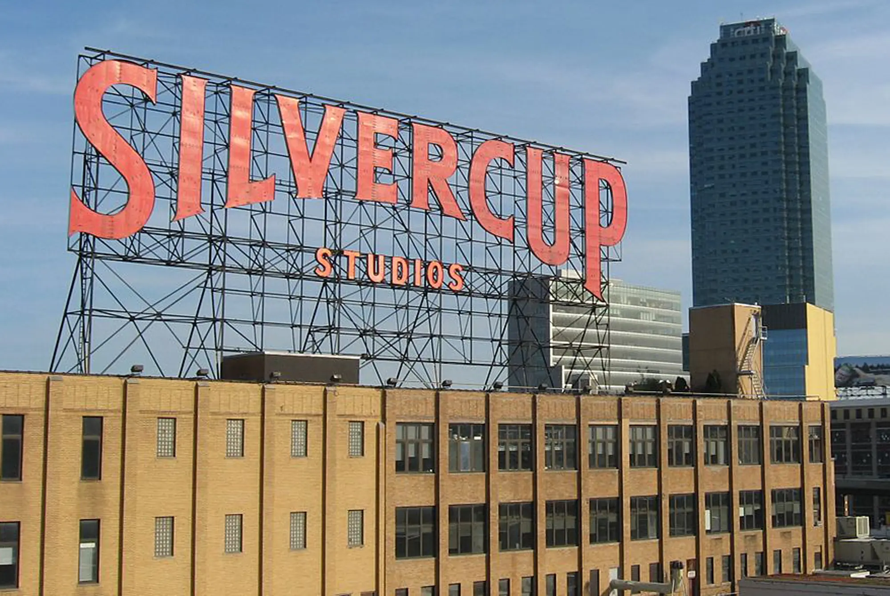
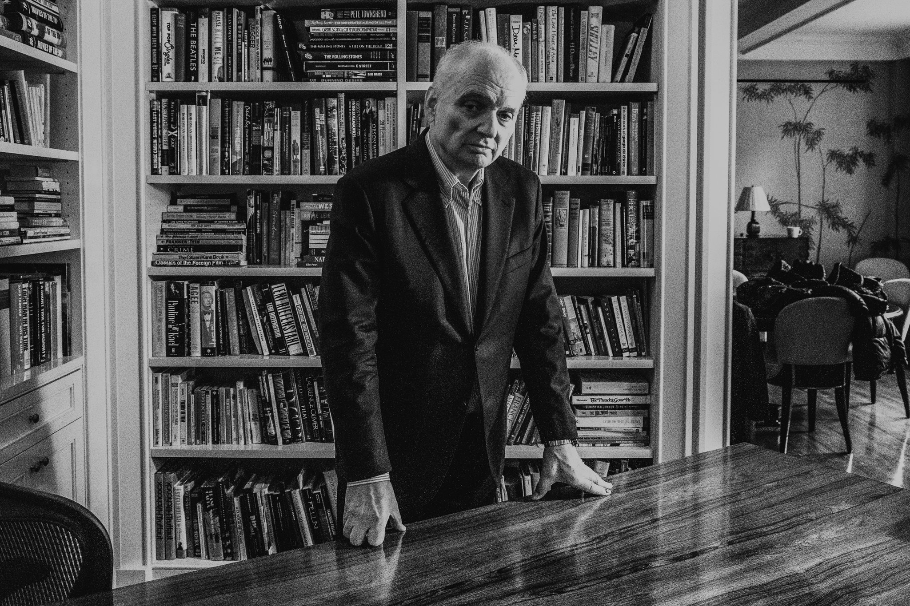

Sinopsis
"Los Soprano" narra la vida de Tony Soprano, un jefe de la mafia de Nueva Jersey, y su familia. La serie explora sus dificultades tanto en el hogar como en su organizacion criminal, y como busca ayuda psiquiatrica para lidiar con la presion y los problemas que enfrenta. Junto a una historia que retrata los problemas del ciudadano estaunidense al principio del siglo XXI, Los Soprano se a convertido en una serie de culto, una ventana a las ansiedades que vivian las personas a principio de siglo.

Soundtrak
Locaciones
La serie de television "Los Soprano" fue rodada principalmente en Nueva Jersey y Nueva York, Estados Unidos. Los interiores se filmaron en Silvercup Studios en Nueva York, mientras que la mayoria de las escenas exteriores se filmaron en localidad de Nueva Jersey. Tambien la serie capturo escenarios de lugares como North Caldwell, donde se encuentra la principal vivienda de la familia Soprano.

New Jersey
Silvercup Studios

Casa de Los Soprano
Creadores, productores y guionistas
El creador principal de "Los Soprano" es David Chase, teniendo rol protagonico en la creacion de la serie durante todas sus temporadas. Luego como productores ejecutivos tenemos a Robin Green, Ilene S. Landress, Terence Winter y Matthew Weiner.
Guionistas en la serie hubo mucho a lo largo de sus seis temporadas, pero lo mas destacables fueron David Chase, Michael Imperioli y Robin Green.
David Chase, creador de Los Soprano
